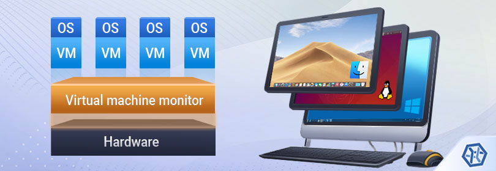

En informatique, une machine virtuelle est une illusion d'un appareil informatique créée par un logiciel d'émulation ou instanciée sur un hyperviseur. Le logiciel d'émulation simule la présence de ressources matérielles et logicielles telles que la mémoire, le processeur, le disque dur, voire le système d'exploitation et les pilotes, permettant d'exécuter des programmes dans les mêmes conditions que celles de la machine simulée1. Un des intérêts des machines virtuelles est de pouvoir s'abstraire des caractéristiques de la machine physique utilisée , ce qui permet une forte portabilité des logiciels et la gestion de systèmes hérités parfois conçus pour des machines ou des environnements logiciels anciens et plus disponibles. Les machines virtuelles sont également utilisées pour isoler des applications pour des raisons de sécurité, pour augmenter la robustesse d'un serveur en limitant l'impact des erreurs système ou pour émuler plusieurs machines sur une seule machine physique.
Machine virtuelle
La réalité des développeurs dans l'industrie...
